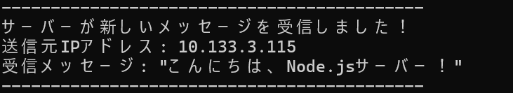

Chapter 4: スマートフォンからもメッセージを送信してみよう
Chapter 3で、PCのブラウザからメッセージを送信し、サーバーがそれを受け取れることを確認しました。
このチャプターでは、**あなたのスマートフォンから、PCで起動しているNode.jsサーバーへメッセージを送信**し、サーバーがPCだけでなくネットワーク上のデバイスからもデータを受け取れることを体験します。
1. PCのIPアドレスを確認
スマートフォンからPCのサーバーにアクセスするには、PCの「IPアドレス」が必要です。
PCで、ターミナルまたはコマンドプロンプトを開き、以下のコマンドを入力してください。
- Windowsの場合:
ipconfig - macOS / Linuxの場合:
またはifconfigip addr
表示された情報の中から、「IPv4アドレス」または「inetアドレス」を探してください。通常、`192.168.x.x` や `10.0.x.x` のような形式です。
例: `192.168.1.5` など。このアドレスをメモしておきましょう。
2. ファイアウォールの設定を確認（重要！）
WindowsやmacOSには「ファイアウォール」という機能があり、外部からのアクセスをブロックすることがあります。
もしスマートフォンからサーバーにアクセスできない場合は、ファイアウォールが原因かもしれません。一時的にNode.js（または3000番ポート）の通信を許可する設定が必要になる場合があります。
- Windows: 「Windows Defender ファイアウォール」の設定で「アプリを許可」からNode.jsを許可するか、ポート3000を開放します。
- macOS: 「システム設定」→「ネットワーク」→「ファイアウォール」で設定を確認します。
※セキュリティ上の理由から、不要なポートは開放しないことが推奨されます。今回は学習目的のため、一時的に設定を変更してください。
3. スマートフォンを同じWi-Fiに接続
あなたのスマートフォンが、PCと同じWi-Fiルーターに接続されていることを確認してください。異なるネットワークに接続されていると、アクセスできません。
4. スマートフォンのブラウザからアクセスし、メッセージを送信
スマートフォンのWebブラウザ（Safari, Chromeなど）を開き、アドレスバーに「PCのIPアドレス:ポート番号」を入力してアクセスしてください。
例: あなたのPCのIPアドレスが `192.168.1.5` だったら、
http://192.168.1.5:3000/PCのブラウザで見たときと同じメッセージ送信フォームが表示されるはずです。
フォームに好きなメッセージを入力し、「サーバーに送信」ボタンをタップしてください。
5. PCのターミナルでサーバーのログを確認！
スマートフォンからメッセージを送信すると、PCで起動しているNode.jsサーバーのターミナルに、送信されたメッセージがログとして表示されるはずです！
「送信元IPアドレス」がスマートフォンのIPアドレスになっていることを確認してみましょう！
これで、あなたのNode.jsサーバーが、ローカルPCだけでなく、ネットワーク上の他のデバイス（スマートフォン）からもデータを受け取れることを確認できました！
最終更新日：2025年7月14日
制作時間：約6時間